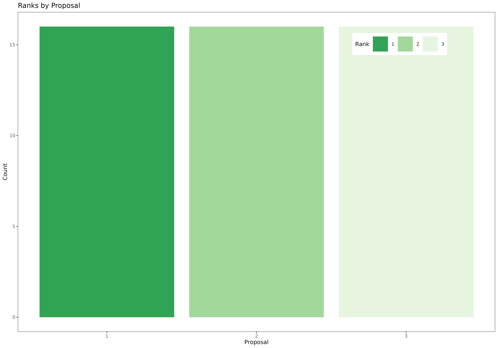
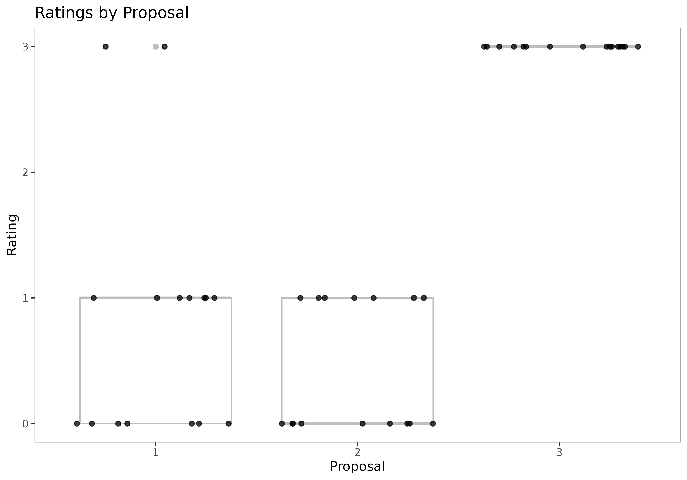
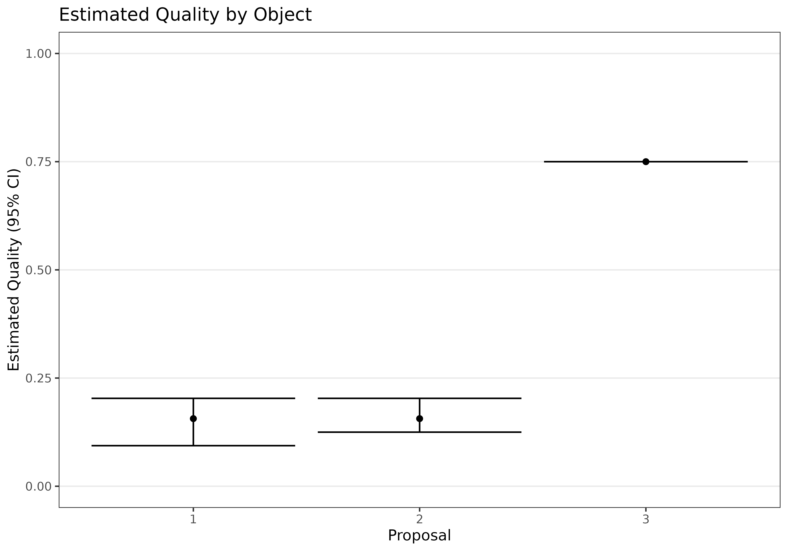
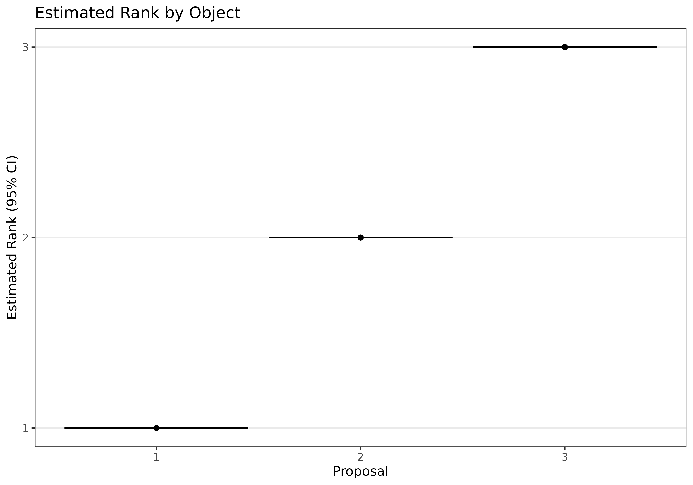

tutorial.RmdIn this tutorial, we demonstrate the key functionality of the
rankrate package on a toy data set first analyzed in Gallo et al. (2023). The tutorial includes code
for visualization of rankings and ratings, as well as demonstration of
functions for model estimation and inference. We begin by loading
necessary packages.
library(rankrate)
library(reshape2) # data reformatting
library(pander) # creating nice tables
library(ggplot2) # creating nice figuresWe now load the ToyData3 data set, which is included in
the rankrate package. The data set includes 16 judges who
assess 3 objects with rankings and ratings. Specifically, each judge
provides a complete ranking of all objects, and rates each object using
the integers between 0 (best) and 4 (worst). The ratings provided by
each judge need not align with his/her ranking.
data("ToyData3")Let’s start by displaying rankings from the toy data set in tabular and graphical form.
rankings_table <- as.data.frame(ToyData3$rankings)
rownames(rankings_table) <- paste0("Judge ",1:16)
names(rankings_table) <- paste0("Rank ",1:3)
pander(rankings_table)| Rank 1 | Rank 2 | Rank 3 | |
|---|---|---|---|
| Judge 1 | 1 | 2 | 3 |
| Judge 2 | 1 | 2 | 3 |
| Judge 3 | 1 | 2 | 3 |
| Judge 4 | 1 | 2 | 3 |
| Judge 5 | 1 | 2 | 3 |
| Judge 6 | 1 | 2 | 3 |
| Judge 7 | 1 | 2 | 3 |
| Judge 8 | 1 | 2 | 3 |
| Judge 9 | 1 | 2 | 3 |
| Judge 10 | 1 | 2 | 3 |
| Judge 11 | 1 | 2 | 3 |
| Judge 12 | 1 | 2 | 3 |
| Judge 13 | 1 | 2 | 3 |
| Judge 14 | 1 | 2 | 3 |
| Judge 15 | 2 | 1 | 3 |
| Judge 16 | 2 | 1 | 3 |
rankings_long <- melt(ToyData3$rankings)
names(rankings_long) <- c("Judge","Rank","Proposal")
ggplot(rankings_long,aes(x=Proposal,fill=factor(Rank)))+theme_bw(base_size=10)+
geom_bar()+scale_fill_manual(values=c("#31A354","#A1D99B","#E5F5E0"))+
labs(fill="Rank",y="Count")+ggtitle("Ranks by Proposal")+
theme(panel.grid = element_blank())
Let’s start by displaying rankings from the toy data set in tabular and graphical form.
ratings_table <- as.data.frame(ToyData3$ratings)
rownames(ratings_table) <- paste0("Judge ",1:16)
names(ratings_table) <- c("Proposal: 1",2:3)
set.alignment("right")
pander(ratings_table)| Proposal: 1 | 2 | 3 | |
|---|---|---|---|
| Judge 1 | 0 | 1 | 3 |
| Judge 2 | 0 | 1 | 3 |
| Judge 3 | 0 | 1 | 3 |
| Judge 4 | 0 | 1 | 3 |
| Judge 5 | 0 | 1 | 3 |
| Judge 6 | 0 | 1 | 3 |
| Judge 7 | 0 | 1 | 3 |
| Judge 8 | 1 | 0 | 3 |
| Judge 9 | 1 | 0 | 3 |
| Judge 10 | 1 | 0 | 3 |
| Judge 11 | 1 | 0 | 3 |
| Judge 12 | 1 | 0 | 3 |
| Judge 13 | 1 | 0 | 3 |
| Judge 14 | 1 | 0 | 3 |
| Judge 15 | 3 | 0 | 3 |
| Judge 16 | 3 | 0 | 3 |
ratings_long <- melt(ToyData3$ratings)
names(ratings_long) <- c("Judge","Proposal","Rating")
ggplot(ratings_long,aes(x=factor(Proposal),y=Rating))+theme_bw(base_size=10)+
geom_boxplot(color="gray")+geom_jitter(height=0,width=0.4,alpha=0.75)+
labs(x="Proposal",y="Rating")+ggtitle("Ratings by Proposal")+
theme(panel.grid = element_blank())
Now, let’s fit a Mallows-Binomial model to our toy dataset. Given the relatively small size of the data, we will use the exact MLE search method, “ASTAR”.
MLE_mb <- fit_mb(rankings=ToyData3$rankings,ratings=ToyData3$ratings,M=ToyData3$M,method="ASTAR")
pander(data.frame(Parameter=c("Consensus Ranking, pi_0",
"Object Quality Parameter, p",
"Consensus Scale Parameter, theta"),
MLE=c(paste0(MLE_mb$pi0,collapse="<"),
paste0("(",paste0(round(MLE_mb$p,2),collapse=","),")"),
round(MLE_mb$theta,2))))| Parameter | MLE |
|---|---|
| Consensus Ranking, pi_0 | 1<2<3 |
| Object Quality Parameter, p | (0.16,0.16,0.75) |
| Consensus Scale Parameter, theta | 2.77 |
Furthermore, we can bootstrap confidence intervals using the
ci_mb function. Below, we calculate and display 95%
confidence intervals for the object quality parameters, p,
as well as for the estimated rank of each object. We observe that even
though objects 1 and 2 are estimated to be of similar quality, object 1
is still preferred to object 2 with high certainty. Object 3 is in third
place.
CI_mb <- ci_mb(rankings=ToyData3$rankings,ratings=ToyData3$ratings,M=ToyData3$M,
interval=0.95,nsamples=200,method="ASTAR")
plot_p <- as.data.frame(cbind(1:3,MLE_mb$p,t(CI_mb$ci[,1:3])))
names(plot_p) <- c("Proposal","PointEstimate","Lower","Upper")
ggplot(plot_p,aes(x=Proposal,y=PointEstimate,ymin=Lower,ymax=Upper))+
geom_point()+geom_errorbar()+ylim(c(0,1))+theme_bw(base_size=10)+
labs(x="Proposal",y="Estimated Quality (95% CI)")+
ggtitle("Estimated Quality by Object")+
theme(panel.grid.major.x = element_blank(),
panel.grid.minor = element_blank())
plot_pi0 <- as.data.frame(cbind(1:3,order(MLE_mb$pi0),t(CI_mb$ci_ranks)))
names(plot_pi0) <- c("Proposal","PointEstimate","Lower","Upper")
ggplot(plot_pi0,aes(x=Proposal,y=PointEstimate,ymin=Lower,ymax=Upper))+
geom_point()+geom_errorbar()+theme_bw(base_size=10)+
scale_y_continuous(breaks=1:3)+
labs(x="Proposal",y="Estimated Rank (95% CI)")+
ggtitle("Estimated Rank by Object")+
theme(panel.grid.major.x = element_blank(),
panel.grid.minor = element_blank())